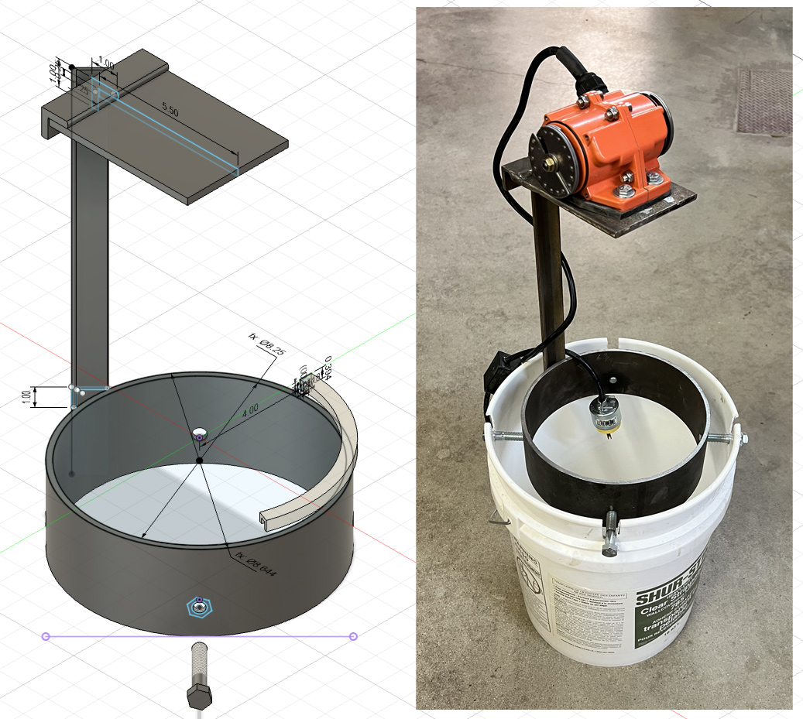
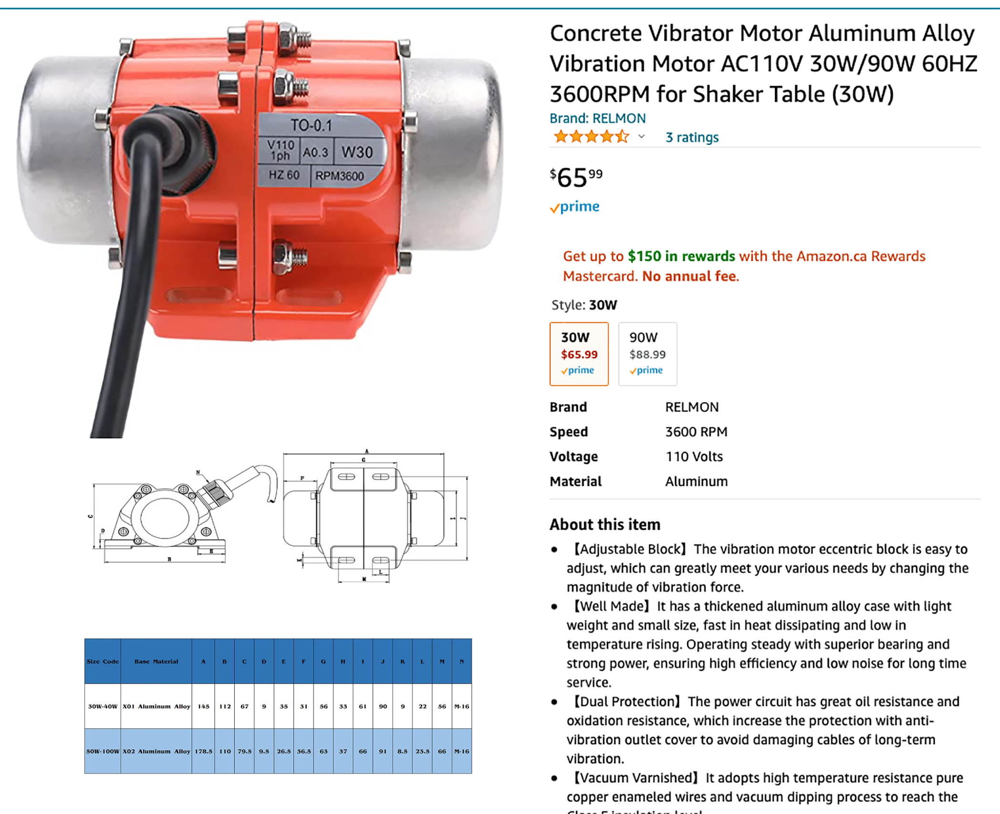
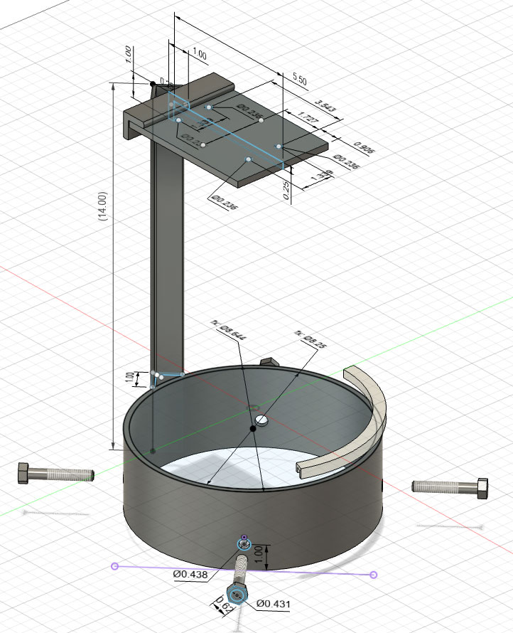
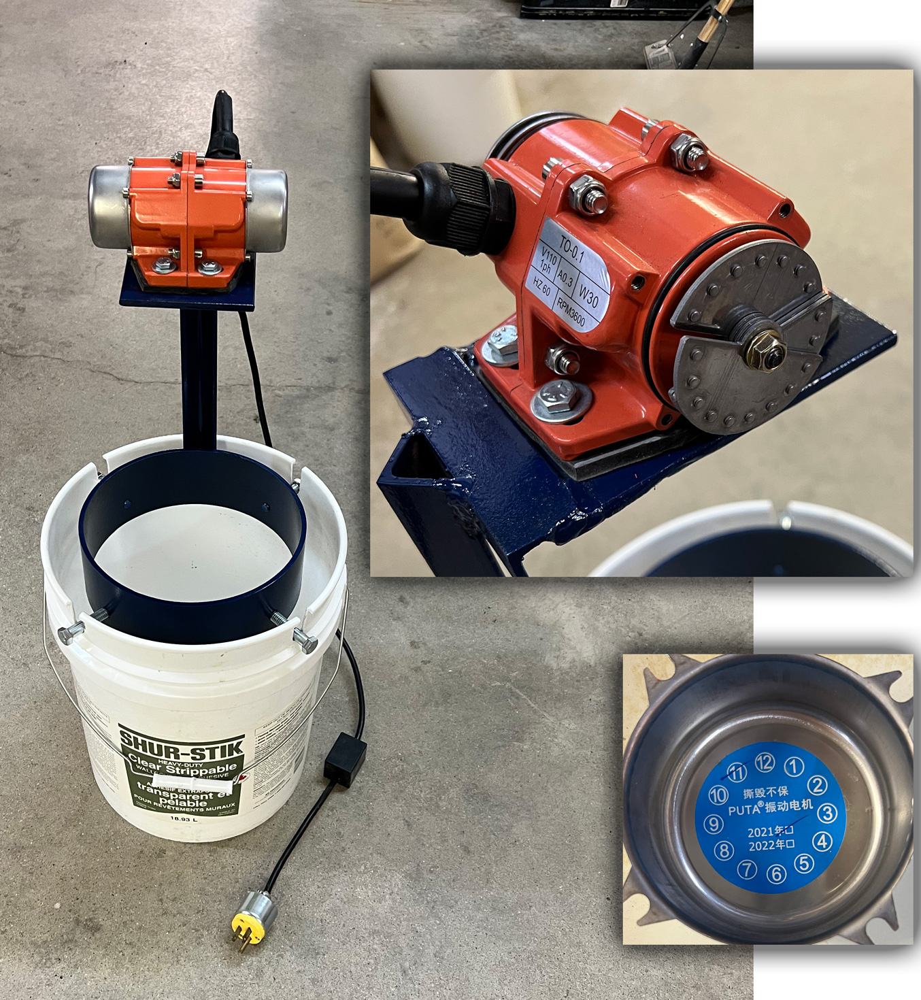
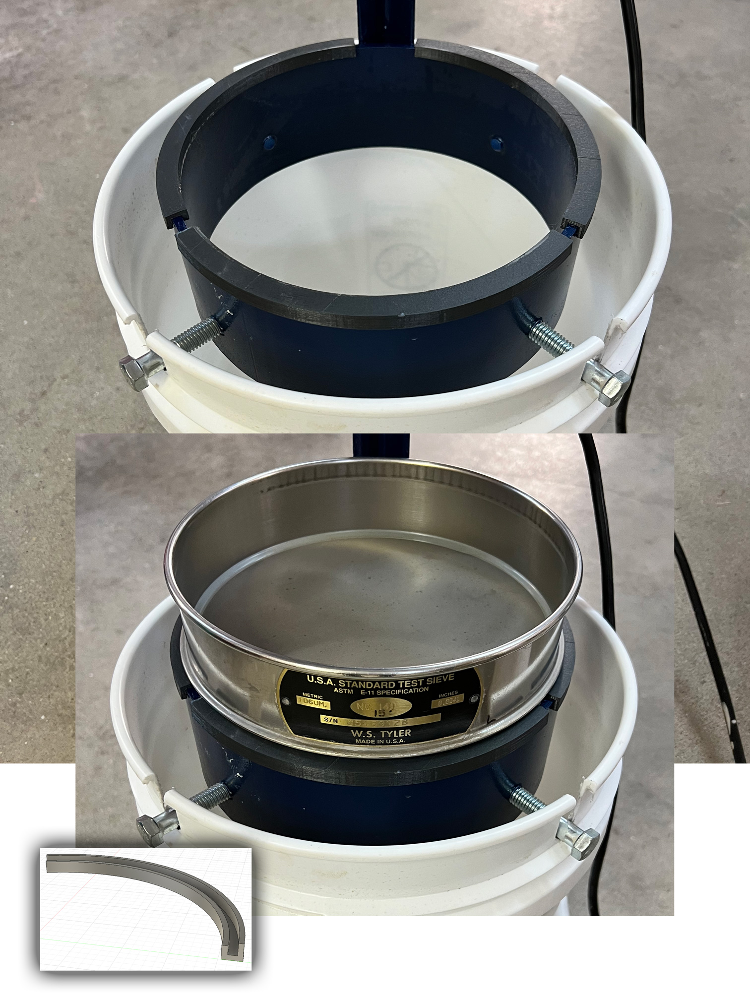
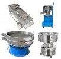
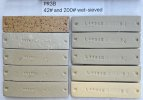

A cereal bowl jigger mold made using 3D printing
Beer Bottle Master Mold via 3D Printing
Better porosity for Brown Sugar Savers
Build a kiln monitoring device
Celebration Project
Coffee Mug Slip Casting Mold via 3D Printing
Comparing the Melt Fluidity of 16 Frits
Cookie Cutting clay with 3D printed cutters
Evaluating a clay's suitability for use in pottery
Make a mold for 4-gallon stackable calciners
Make Your Own Pyrometric Cones
Making a high quality ceramic tile
Making a Plaster Table
Making Bricks
Making our own kiln posts using a hand extruder
Medalta Ball Pitcher Slip Casting Mold via 3D Printing
Medalta Jug Master Mold Development
Mold Natches
Mother Nature's Porcelain - Plainsman 3B
Mug Handle Casting
Nursery plant pot mold via 3D printing
Pie-Crust Mug-Making Method
Plainsman 3D, Mother Nature's Porcelain/Stoneware
Project to Document a Shimpo Jiggering Attachment
Roll, Cut, Pull, Attach Handle-making Method
Slurry Mixing and Dewatering Your Own Clay Body
Testing a New Load of EP Kaolin
Using milk as a glaze
Make your own sieve shaker to process ceramic slurries
When slurrying up a clay body, glaze or engobe it is customary to sieve it to remove both lump and particulate impurities. Sieving powders and liquids by hand is time-consuming, especially for finer mesh sieves. Of course, there are many stainless steel sieve shakers on Amazon, some handle powders and others powders or liquids. And they can cost less than $1000. However, you can also make your own for a fraction of that.
This inexpensive vibrating shaker changes that, doing in seconds what would either be very difficult or impossible by hand. We got the initial idea for this from shower-shelf.com (see links at bottom of this page).
To make the shaker described on this page access to metal fabrication skills and equipment and a 3D printer and 3D design skills are required. But since this entire website promotes independence and understanding of materials, process and equipment in the ceramic process, whether as a potter or manufacturer, we consider these resources to be essential. Even for serious hobbyists.
We made this from an inexpensive 30-watt vibration motor from Amazon (it is of excellent quality). The motor has movable weights on both ends of the shaft, rotating them enables fine control over the amount of vibration (as shipped it vibrated far too much).
We used a 3-inch length of 8 1/4 inch inside-diameter steel pipe (for use on pipelines). The motor mounts to a 1/4 inch plate welded to an upright section of 1-inch angle iron. The flange of a standard Tyler sieve measures 8" so we 3D-printed a three-piece collar that fit tightly over the end of the pipe, it holds the sieve firmly. The assembly fits into notches on a standard 5-gallon pail, by four bolts threaded into holes in the pipe.
When the vibration is right for us the bucket moves around on the floor a little when empty. If the slurry is made from 200 mesh materials, and the sieve is coarser than that and has plenty of water, it should pour through at speed. If the slurry is a clay having impurity particles and sand, it will go through quickly at first but then slow down as the oversize collects. To deal with this, pour in batches, allow the oversize to coagulate into islands, then stop and remove them before continuing. Using this method we can sieve MNP, for example, at 140 mesh very quickly, 2-5% is oversize.
Deflocculated slurries (bodies, glazes and engobes) are very difficult to sieve because they can be thick and sticky. But vibrating the sieve makes it easy. Flocculated slurries (e.g. engobes) are also much easier this way. A sieve shaker also enables processing slurries having a lower water content than would otherwise be possible.
Related Information
Make your own vibrating sieve
And process your own super-fine clays

This picture has its own page with more detail, click here to see it.
Being more independent is now cool again. Actually, it is being forced upon us by necessity because of supply chain issues and skyrocketing prices of convenience glazes, bodies, engobes, etc. Independence involves using sieves. True, it is no problem for a potter or lab tech to manually coax a glaze slurry through a small 80# sieve. But real independence is about sieving in volume - clay bodies made from your own native clays. And doing it at up to 325 mesh. That requires a vibrating sieve. This one cost us less than $100 to make. Of course, a Tyler sieve (or similar) is needed, these can be purchased on Ebay or Amazon. And a vibration motor, some metal and hardware and a friend with metal fabrication tools. This demonstrates the utility of a vibrating sieve, the idea can be scaled to any size you need. As an example, oil well drilling sites here have to remove particulates from huge volumes of drilling mud and they do it on giant multi-level units.
Vibration motor on Amazon

This picture has its own page with more detail, click here to see it.
This is the smallest one they have and plenty big enough for this purpose. It arrived within a few days after ordering.
Drawing for sieve shaker
Available on the Downloads page

This picture has its own page with more detail, click here to see it.
This is the brainchild Kirk Miller at Plainsman Clays. I made the drawing based on one that he made. It sits on top of a 5-gallon pail (the bolts sit into slots cut down from the rim). 3D rings must be printed to slide down onto the metal hoop and they must create an inner diameter that enables the lab sieve to seat securely.
Adjusting the amount of vibration is the key to utility

This picture has its own page with more detail, click here to see it.
The position of the weights on the shaft determines the amount of vibration. The notches in the three plates hold them in place. When adjusting the position of the plates be very careful not to get your hand caught in them when turning the motor on! Experiment with different settings to get as much vibration as your setup will tolerate without shaking the sieve out of the mount. Reinstall the protective caps as soon as possible.
3D printed collars to make the sieve fit snuggly

This picture has its own page with more detail, click here to see it.
This is a 140 mesh Tyler sieve. It drops into the plastic 3D-printed collars and fits tightly. And the collars also need to mount tight on the pipe so everything stays secure during vibration. The collars were printed, upside down, in 110 degree sections. I created the design using Fusion 360 by drawing a rough outline of the cross-section profile and then dimensioning and revolving it 100 degrees. Typically creating these is a try-adjust-print-again process to get a good fit. Remember never to wash these printed parts in hot water or they will warp.
Inbound Photo Links
|
 Personal size sieve shakers you can buy on Amazon |
 Here is What Processing a Clay Can Do |
Links
| Glossary |
Sieve Shaker
A device that can vibrate a sieve thus greatly increasing the speed at which it can process a slurry or powder. |
| Glossary |
Slurry Up
The process of slurrying a clay body powder and dewatering it on a plastic slab or table. |
| URLs |
https://www.youtube.com/watch?v=GUAVem7rJKs&authuser=0
Video of ingenious vibrating sieve system used for casting slip at shower-shelf.com They built a table with slurry tank below and a rectangular cutout with a flange. Their sieves drop in to fit the cutout and a square vibration frame drops down on top of the seive. The setup can process high specific gravity casting slip quickly. The only part that needs washing is the sieve itself. |
| URLs |
https://www.youtube.com/watch?v=0zXfghDNxUg
ShowerShelf.com vibratory screen that fits the top of a five-gallon bucket The tank, sieve and vibration assembly are all in one piece that fits into the top of the bucket. This unit can handle 1.8SG slurry. |
| URLs |
https://www.amazon.ca/INTBUYING-Vibrating-Stainless-Machine-Electric/dp/B0CFLRV64K
110v/220v Inclined-box Linear Sifter Shaker on Amazon (for lump removal, less than $1000) |
| URLs |
https://www.amazon.ca/Automatic-Vibrating-Stainless-Screening-Particles/dp/B0C1ZGPMRL
110v/50w 40/60 mesh 30cm dia Sieve Shaker for Powders on Amazon (less than $1000) |
| URLs |
https://www.amazon.ca/YUCHENGTECH-Industrial-Vibrating-Particles-Screening/dp/B082KRYCJG
220V 50W Industrial Vibrating Sieve Machine for powders/liquids (to 500 mesh) on Amazon (less than $3000). |
| URLs |
https://www.amazon.ca/INTBUYING-Stainless-Ultra-high-Efficiency-Metallurgy/dp/B098SRHQ8P
208V 60HZ Triphase 1500W Powder/liquid Three-layer Stainless Steel Vibrating Sieving Machine (less than $5000) |
 PayPal | No tracking, No ads, No paywall, No transient content! Just organized, concise information constantly updated and improved. Was this helpful? Consider supporting me. |
| By Tony Hansen Follow me on        |  |
Got a Question?
Buy me a coffee and we can talk 

https://digitalfire.com, All Rights Reserved
Privacy Policy